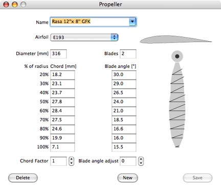
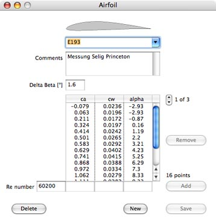
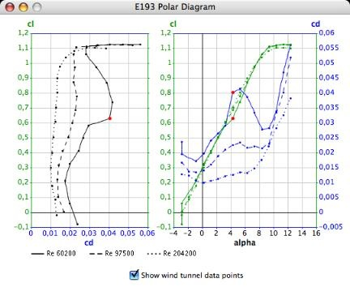
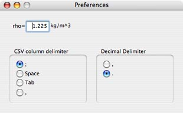

Index
PropCalc computes the performance data of propellers with a given geometry, notably in-flight thrust and power drain across the utilizable airspeed range. PropCalc comes with a database that contains the polars of current airfoils as well as geometrical data of a number of propellers.
The user may amend and enlarge the database. All data are editable, so that PropCalc may be utilized as well for designing propellers.
Select a propeller from the popup menu list in the main application window. Enter the desired rpm in the edit field next to the popup menu and then press the Enter/Return key. Holding the left mouse button and dragging the mouse cursor vertically anywhere in the graph area will also change the rpm setting.
PropCalc computes the results that are displayed in the graphs for the defined rpm over the course of the airspeed, or the rate of advance, respectively, up to the point at which the thrust fades. You may take each of the small graphs to the front, that is have it displayed large-sized, by clicking on it.
The graphs display
• the thrust, expressed in [Newtons], the power drain P, expressed in [Watts], and the propeller's efficiency Eta over the airspeed v in [meters per second];
• the real efficiency as opposed to the ideal efficiency, which would be achieved if no loss occurred, over the rate of advance J; the rate of advance is defined as J = 60/rpm * v/D with D = Diameter in [m];
• the dimension-less thrust coefficient CT and its parts cl und cd over the rate of advance J; 'cl' is the lift coefficient, with 'cd' being the drag coefficient.
• the dimension-less power coefficient CP and its parts cl und cd over the rate of advance J.
By clicking on the button 'Result Table' you may open a window that displays the results in the numerical form. The result table can be saved to a 'character separated values' file. If needed, you may modify the decimal separator and the field delimiter used in the .csv file in the 'Preferences Window'.
To inspect the propeller data, modify the selected propeller, or enter new propeller data, select 'Propeller' in the application's 'Edit' menu, or double-click on the airfoil drawing in the main window. This will open the propeller window.

In the propeller window you may enter or change the propeller's geometry. You may as well select a different airfoil and thus change the propeller's properties. The result of any modification will immediately show up in the diagrams in the main window.
The original data supplied in the database will remain unchanged unless you explicitly order to have the modified data written into the database by clicking on the 'Save' button.
Before experimenting with the propeller data it is a good idea to make a copy of the propeller so as not to lose or change the original data accidentally. To make a copy of the original propeller, hold down the ‘Shift’ key and click on the ‘New’ button in the propeller window. The contents are copied to a new record and the word "copy" is appended to the propeller's name. When entering new data, use a unique name, so that the propeller can be identified in the popup menu lists.
If the diameter is changed, all dimensions will be converted accordingly. This will make up a bigger or a smaller propeller of the same shape. The P/D ratio (pitch/diameter) remains unchanged.
The blade's chord and angle (measured underneath the blade) are defined by nine measurement points along the radius. By varying the chord factor you can examine the effect of different chord sizes on the propeller's performance. You may also enter a blade angle adjust value, thereby skewing the blade and thus changing the pitch within certain limits.
The propeller blade drawing on the right side shows the chord and the blade angle over the course of the radius. This is meant to give a general impression and facilitate detecting input errors. Double-click on the drawing to open another diagram window and have the essential geometrical properties displayed over the course of the radius: the chord, the blade angle, the pitch and the P/D ratio.
A double-click on the airfoil drawing in the upper right edge or selecting 'Airfoil' from the 'Edit' menu will open the airfoil window.

The primary purpose of the airfoil window is for entering the wind tunnel data of new profiles. Up to five polars for different Reynolds numbers can be entered to characterize the airfoil. For the airfoils contained in the database you normally should not modify the polars or the Delta Beta angle. Delta Beta defines the difference between the blade bottom, where the angles are measured, and the airfoil's chord, which is the usual reference for the wind tunnel data.
To inspect the lists of the measured coefficients for different Re numbers, click on the small arrows to the right of the list title. If you click on the downward arrow, the next list will appear, if you click on the upward arrow, the previous list is displayed. If the last list is on display and you click on the downward arrow once again, an empty list will appear, allowing you to enter more wind tunnel data. To make a copy of the original airfoil, hold down the ‘Shift’ key and click on the ‘New’ button in the airfoil window.
To enter a new airfoil, select the empty name file in the popup menu or click on the 'New' button.
To transfer a profile drawing to the database, drag the icon of a picture file to the space above the popup menu in the airfoil window. The picture will be scaled automatically. PropCalc recognizes the picture file formats JPEG, BMP, PNG, GIF und TIFF.
Enter the Re number, the measured coefficients cl und cd, and the corresponding angle of attack alpha in the edit fields below the list. Then click on 'Add' to have the data assigned to the list. Numbers contained in the list can be made editable by clicking on them.
To add data for another Re number click on the downward arrow, so that the word 'New' appears right to it. PropCalc needs wind tunnel data for at least two Re numbers to perform its computations. Once all data have been entered, click on 'Save' to have the record added to the database.
Double-click on the profile drawing in the airfoil window to open the polar diagram window.

The diagram on the left displays the lift coefficient cl and the drag coefficient cd for the different Re numbers in the way developed by Otto Lilienthal. On the right you see both coefficients above the course of the angle of attack alpha. If you select a wind tunnel data row in the airfoil window by clicking on it, the corresponding measurements points will be highlighted with red color in the diagram.

The parameter 'rho' defines the air density that is taken as a basis in all computations. The default value is 1.225kg/m3.
The csv delimiter and the decimal separator are used if the results table is written to a .csv file. Usually the colon is the appropriate csv delimiter, while the decimal separator depends on the country setting. If the comma is selected as the csv delimiter, as needed by some Excel versions, the comma cannot be used as the decimal separator.